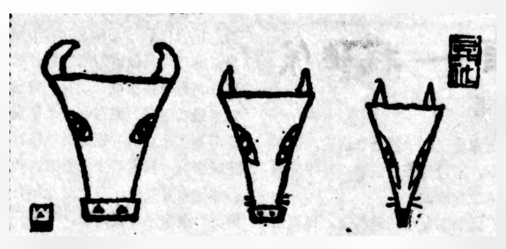

佚名 《人事》1989年第11期（总第50期），第36页
异化
Alienation
- Text in the drawing
- 异化（印章体标题）
Alienation (title in seal script) - Description
- Three heads in a row: a broad ox with curved horns, a thinner ox, and finally a narrow, sharp-eared head that has become more fox than ox.
- Note
- The ox (老黄牛) was the stock image of the selfless, hard-working cadre; the fox is cunning. 异化, “alienation,” was a much-debated Marxist term in 1980s China.
- Artist
- Unattributed 佚名
- Published in
- 《人事》1989年第11期（总第50期）, p. 36
- Themes
- Bureaucratism

Cite
Unattributed, “异化” [Alienation], Renshi (Personnel) 《人事》, 1989, no. 11, p. 36.